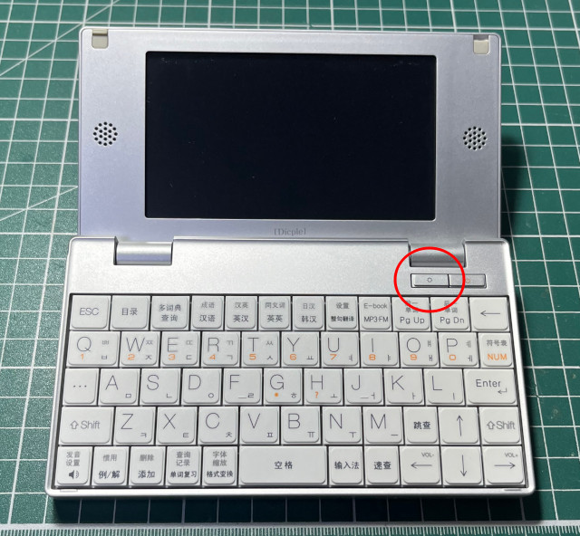
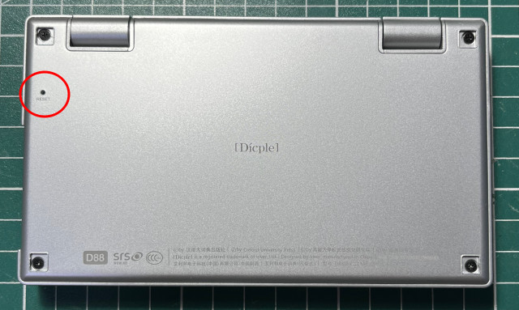
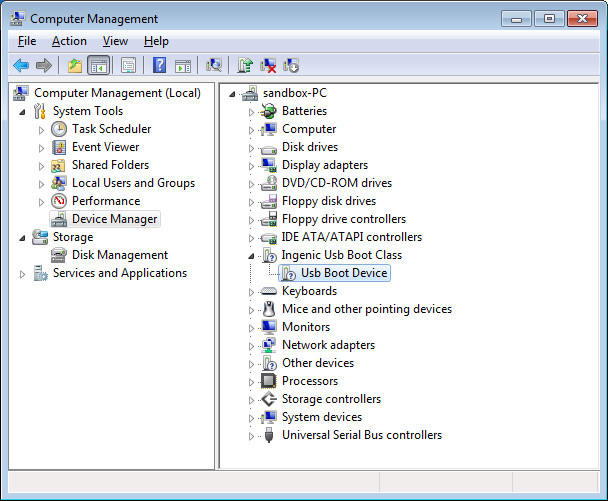
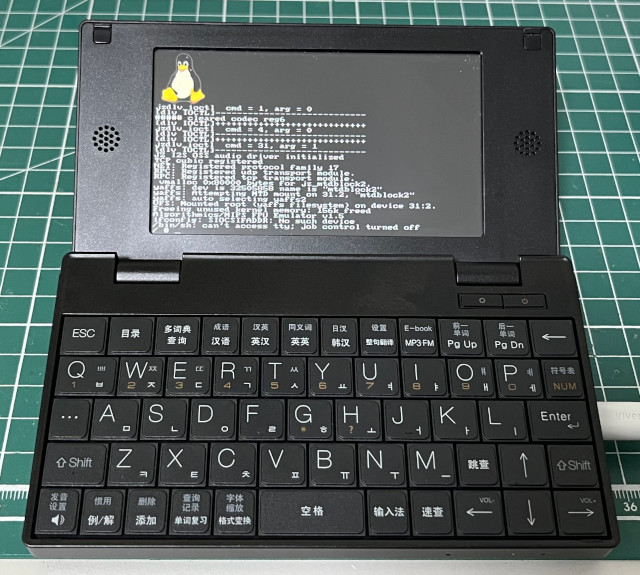

Steward
分享是一種喜悅、更是一種幸福
微電腦 - iRiver Dicple D88 - 如何透過USBBoot刷機
感謝QQ群友5A55提供這個燒錄工具、萬光明修正OOB的配置問題，燒錄步驟如下：
1. 下載https://github.com/steward-fu/website/releases/download/iriver-d88/usbboot.zip
2. 按住背光後，再按一下Reset，背光按鍵需要持續按住，直到進入燒錄模式


進入燒錄模式後，確定安裝好驅動程式

3. 執行USB_Boot.exe
Welcome! USB Boot Host Software! USB Boot Software current version: 1.4b Handling user command. USBBoot :>
4. 執行boot 0進入特殊模式
USBBoot :> boot 0 Checking state of No.0 device: Unboot Now booting No.0 device: Download stage one program and execute at 0x80002000: Pass Download stage two program and execute at 0x80c00000: Pass Boot success! Now configure No.0 device: Now checking whether all configure args valid: Current device information: CPU is Jz4750 Crystal work at 24MHz, the CCLK up to 336MHz and PMH_CLK up to 112MHz Total SDRAM size is 16 MB, work in 4 bank and 32 bit mode Nand page size 4096, ECC offset 24, bad block ID 127, use 1 plane mode Configure success!
5. nquery可以查訊目前裝置資訊
USBBoot :> nquery 0 0 ID of No.0 device No.0 flash: Vendor ID :0xec Product ID :0xd7 Chip ID :0xd5 Page ID :0x29 Plane ID :0x38 Operation status: Success!
6. nerase抹除資料
USBBoot :> nerase 0 8192 0 0 Erasing No.0 device No.0 flash...... Finish! Operation end position : 8193 Force erase ,no bad block infomation !
P.S. 抹除的單位是Block，512KB * 8192 = 4GB
7. 燒錄U-Boot
USBBoot :> nprog 0 u-boot-nand-release.bin 0 0 -n Programing No.0 device... Erasing No.0 device No.0 flash...... Finish! Operation end position : 1 Force erase ,no bad block infomation ! Total size to send in byte is :512668 Image type : without oob It will cause 1 times buffer transfer. No.1 Programming... Finish! Checking... pass! End at 126
P.S. 燒錄的第一個參數是Page Offset，而不是Block Offset，如果只要單獨抹除U-Boot區塊，可以使用nerase 0 8 0 0
8. 燒錄Kernel
USBBoot :> nprog 1024 uImage 0 0 -n Programing No.0 device... Erasing No.0 device No.0 flash...... Finish! Operation end position : 12 Force erase ,no bad block infomation ! Total size to send in byte is :1776665 Image type : without oob It will cause 4 times buffer transfer. No.1 Programming... Finish! Checking... pass! End at 1152 No.2 Programming... Finish! Checking... pass! End at 1280 No.3 Programming... Finish! Checking... pass! End at 1408 No.4 Programming... Finish! Checking... pass! End at 1458
P.S. 如果只要單獨抹除Kernel區塊，可以使用nerase 8 8 0 0
9. 燒錄rootfs
USBBoot :> nprog 2048 rootfs.yaffs2 0 0 -o Programing No.0 device... Erasing No.0 device No.0 flash...... Finish! Operation end position : 24 Force erase ,no bad block infomation ! Total size to send in byte is :4173312 Image type : with oob and without ecc It will cause 8 times buffer transfer. No.1 Programming... Finish! Checking... Check Error! 0=3:ff fail! End at 2304 Can not connect device! Skip a old bad block ! No.2 Programming... Finish! Checking... Check Error! 0=2:ff fail! End at 2560 Can not connect device! Skip a old bad block ! No.3 Programming... Finish! Checking... Check Error! 0=0:ff fail! End at 2816 Can not connect device! Skip a old bad block ! No.4 Programming... Finish! Checking... Check Error! 0=21:ff fail! End at 3072 Can not connect device! Skip a old bad block ! No.5 Programming... Finish! Checking... Check Error! 0=40:ff fail! End at 3584 Can not connect device! Skip a old bad block ! No.6 Programming... Finish! Checking... Check Error! 0=a4:2 fail! End at 3968 Can not connect device! Skip a old bad block ! No.7 Programming... Finish! Checking... Check Error! 0=2:ff fail! End at 4224 Can not connect device! Skip a old bad block ! No.8 Programming... Finish! Checking... pass! End at 4317
P.S. 記得使用-o附帶OOB資訊
10. 完成
